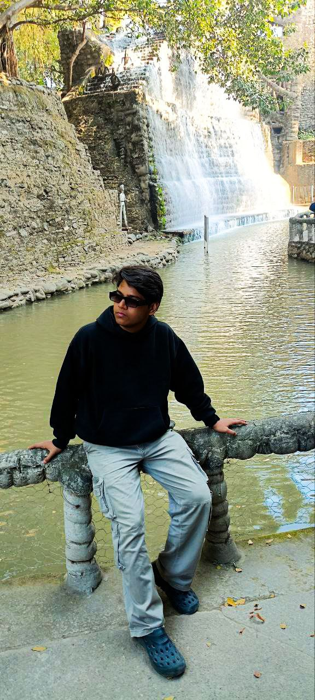

Motivated and enthusiastic B.Tech student from Gorakhpur with a strong interest in software development and technology. Currently learning Java, Data Structures & Algorithms (DSA), and web development to build a solid foundation in programming.
Passionate about continuous learning, self-improvement, and personal growth. Possess a creative mindset with hobbies in cooking and music, and aim to combine technical skills with a positive personality to contribute effectively in a dynamic work environment.